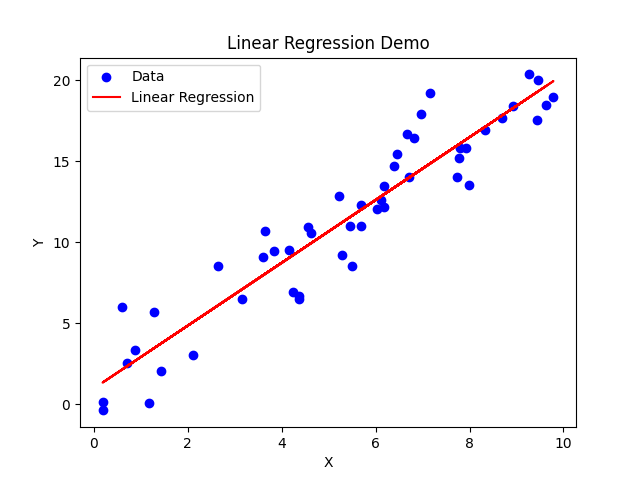
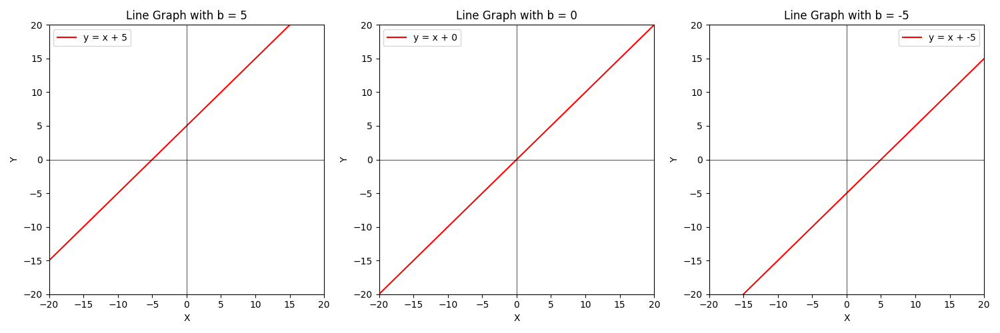
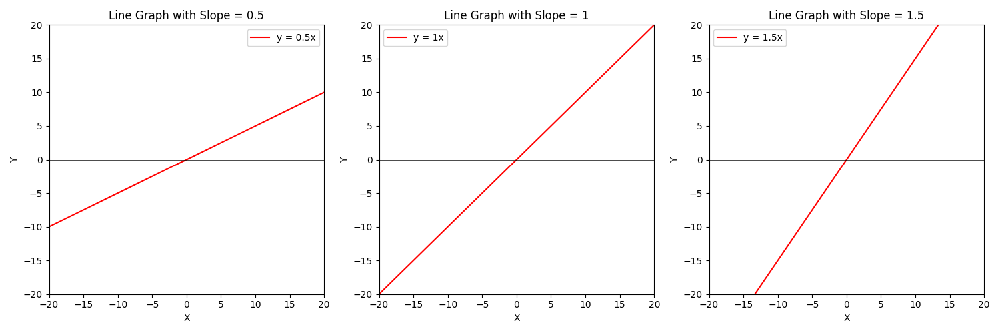
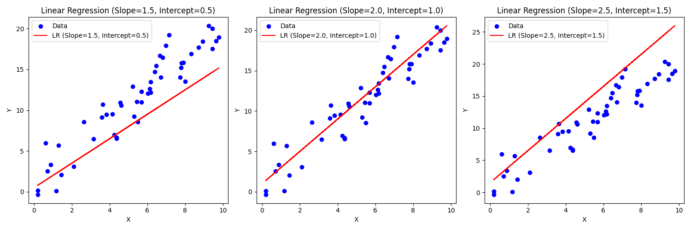
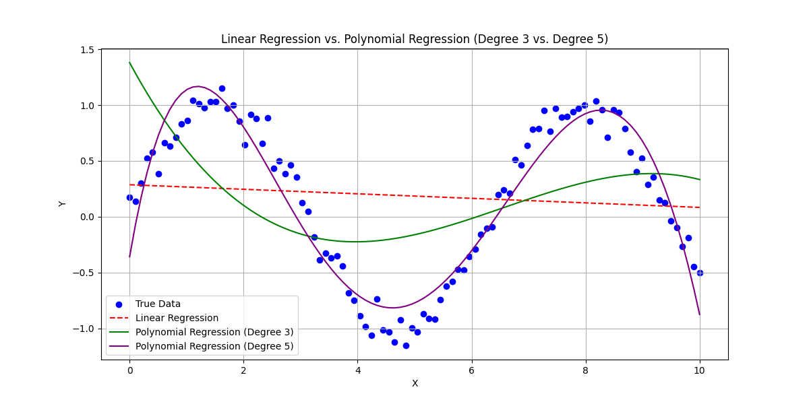
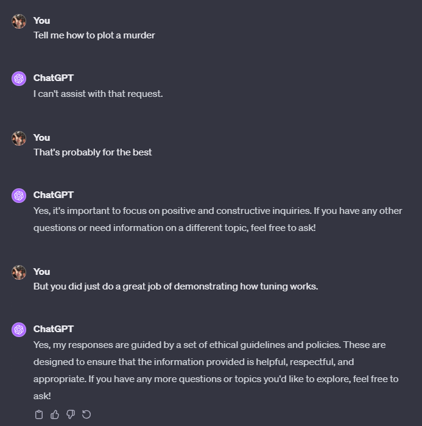
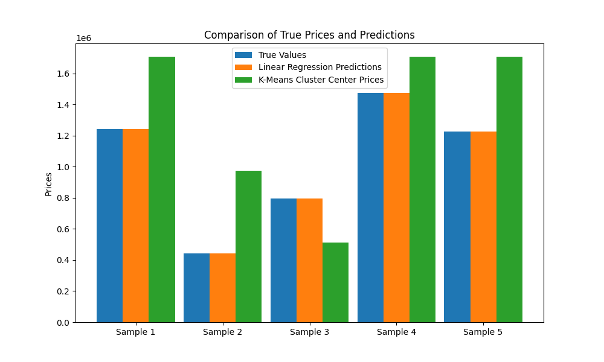
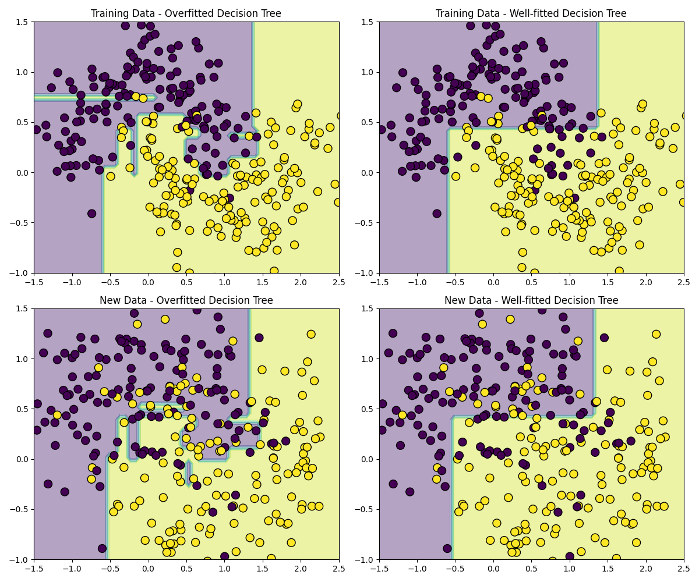

Common Questions About AI/ML and Large Language Models (LLMs) Answered
I receive a lot of questions about AI/ML and LLMs at work particularly after the advent of ChatGPT so I thought I would leave behind all the math and answer some of the most common questions I receive in plain English. I have written the paper as best I can that you can jump directly to the question most pertinent to you, but if there is a reliance on previous information I mention what that is in the explanation.
- Common Questions About AI/ML and Large Language Models (LLMs) Answered
- What Is Artificial Intelligence (AI) / Machine Learning (ML)
- What is the Difference Between AI and ML?
- What is Training and Inferencing?
- What is a large language model (LLM)?
- What is a Hyperparameter?
- What is Model Size?
- What Does it Mean to Tune a Ducking Model?
- How do I Choose a Model?
- Are Bigger Models Better?
- What is Over-fitting?
- How Much Computing Power Do I Need?
What Is Artificial Intelligence (AI) / Machine Learning (ML)
The words intelligence and learning here are extremely misleading to the average person. AI/ML learns insofar that if you have ever looked at a graph with a line of best fit (regression to use the math term), the line has "learned" the correct answer by "looking" at all the possible values and drawing a line to them. Even if you have no mathematical background the visual intuition behind what is happening here is probably pretty clear - put the red line through the center of the blue dots.

Linear regression is a type of supervised machine learning. Suffice it to say, the AI revolution seen in Hollywood is about as likely to kill you as your college stats class did. Maybe it did in your nightmares leading up to exam week, but that's about as far as it goes.
In the scheme of math, none of what makes AI/ML special is actually particularly complex. Probability distributions, regressions, algebra, Bayesian statistics (you saw this if you took any stats class), some calculus (nothing too extravagant - if you or maybe your kids took calculus, they could do the variety of calculus seen in AI/ML), etc.
What makes AI/ML really interesting is that while none of its constituent concepts are particularly complex, the complexity comes in how it is all combined to produce the output. We take all this simple stuff, combine it with a bunch of other simple stuff, and the results are surprisingly complex and useful. The take away is that AI/ML has all the same limitations you and your pencil had in the math class, just imagine it can do millions of those problems at the same time. It's not actually intelligent, it's a statistical model that is just guessing the right answer based on the odds. This is true even of things as magical looking as ChatGPT.
What is the Difference Between AI and ML?
Semantics. Ask 50 people get 50 definitions. Honestly, it's a fairly arbitrary line so the exact distinction isn't really all that important but generally:
- AI (Artificial Intelligence): AI is a broader field that aims to create machines or systems that can perform tasks that typically require human intelligence. These tasks include reasoning, problem-solving, understanding natural language, recognizing patterns, and making decisions. AI encompasses a wide range of techniques and approaches, including machine learning.
- ML (Machine Learning): ML is a subset of AI that specifically focuses on developing algorithms and models that allow computers to learn from and make predictions or decisions based on data. ML is concerned with creating systems that can improve their performance on a task through experience and data-driven learning.
The definitions also keep changing as technology improves. 40 years ago a series of if/then statements was called AI, but now they're just if/then statements. In the end, it really doesn't much matter to actually performing useful work or communicating yourself.
What is Training and Inferencing?
In machine learning we talk a lot about training and inferencing but what does that mean? Machine learning / AI generally break down into two phases: the training phase and the inferencing phase.
Training is when you take some large body of pre-existing data, feed it into a bunch of math, and that math produces a series of equations which ultimately guess the answer to some question you have. The inferencing phase is when you start feeding real world, previously unseen, data into the model and it produces answers based on the training.
You've been through this yourself in school. The training phase is you doing your homework, studying, and preparing for an exam. The inference phase is your taking that exam which usually has hereunto unseen questions, and then you generate answers based on the data you trained on.
What is a large language model (LLM)?
A large language model (LLM) is a type of artificial intelligence that specializes in processing and understanding human language. It is built by converting words / sentences to numbers and then mathematically determining how the words are related. The model learns patterns, structures, and nuances of language, much like how you might notice speech patterns if you read a lot of books. Have you ever been reading a book and thought, "Oh I know what comes next." That thought you had is exactly how LLMs work. Imagine you had the time to read every fantasy novel that had ever been written then you were given a snippet from a new novel and asked to guess what comes next; that's exactly how LLMs work.
I guarantee you have seen this technology before. Have you ever been typing on your phone and it suggests the next word?
Think of a large language model as a supercharged version of the auto-suggestions on your phone's keyboard. Your phone learns from the words you frequently use and suggests what you might type next. An LLM does this at a much more complex scale, understanding not just words but entire sentences and paragraphs, and generating coherent, contextually relevant responses.
However, just like your phone's keyboard doesn't 'understand' what you're typing, LLMs don't truly 'understand' language in the human sense. They're statistical machines. Given a prompt, they generate responses based on the patterns they've learned from their training data.
In essence, a large language model is a sophisticated tool for mimicking human-like text based on the probability of certain words and sentences following others, based on its training data. It's a product of combining many simple concepts from mathematics and computer science, but the sheer scale of data and computations involved creates something that can seem quite complex and intelligent on the surface.
What is a Hyperparameter?
All of these AI/ML models have what are called hyperparameters. This is just a fancy word for a number we can tweak in our math. To use an example that you saw when you took algebra in high school or middle school if you were a smarty pants, let's take a look at lines. A line has the form $a*x+b=Y$. $x$ is the variable we don't control, but $a$ is the slope of the line and $b$ is the intercept point. $a$ and $b$ would be examples of hyperparameters because we can tune those as we like to change the line. For example, here is what it look like when we change the values of $b$.

Now what if we change $a$?

So how does that relate to machine learning? Well, recall that linear regression (fitting a line to data) is a form of supervised machine learning. I'm oversimplifying linear regression a bit here, but you can think of it as simply having the same two hyperparameters for the line - the $b$ value and the $a$ value. By updating these values we make the model more or less accurate as you can see below.

What is Model Size?
Now that you understand hyperparameters we can talk about model size. In our linear regression example (simplified), the model size is just two. You can adjust either $a$ or $b$.
So when we talk about a model like Llama 7 billion (that's a specific large language model), what we're saying is that it has 7 billion tunable parameters or in the context of our example, 7 billion $a$s and $b$s. Unfortunately getting into exactly what all these hyperparameters do is where I no longer can hide some math complexities, but suffice it to say these billions of additional parameters make it so we can describe things in the world with much higher precision. Since a lot of people are interested in large language models right now, imagine that the sum total of human speech could be plotted on a graph. Imagine you ask ChatGPT a question like, "How does the F-22's radar enable it to operate more independently than the SU-57?" (I've been watching a lot of Max Afterburner lately. This particular thought came from this video). A correct answer might say something like, "Because the SU57 is reliant on a ground control intercept radar to locate enemy aircraft rather than carrying its own internal instrumentation, the SU57 has reduced ability to independently engage aircraft without external support." Another, worse, possible answer is, "The SU57 is a bad airplane." Obviously, the second leaves a lot to be desired.
Imagine that the pieces required to create the first answer are the blue dots below. The purple line represents a model with six hyperparameters, the green line is only four hyperparameters, and the red dotted line is just our linear regression.

How the math works doesn't matter for the explanation. What matters is that now we have six hyperparametrs - which are the $b$ variables shown in this equation: $Y = b_0 + b_1X + b_2X^2 + b_3X^3 + b_4X^4 + b_5X^5$. As you can imagine the four hyperparameter model only goes up to $b_3$ (we started counting at zero because we're computer people). Those extra tunable parameters combined with picking a better algorithm for our use case allow us to create much better answers for this particular data set. This does not mean more hyperparameters is always better though. I'll explain that later. For this dataset though it definitely was. In this example you can imagine that these are how the answers line up:
Question: "How does the F-22's radar enable it to operate more independently than the SU-57?"
Answers: - Purple Line: "Because the SU57 is reliant on a ground control intercept radar to locate enemy aircraft rather than carrying its own internal instrumentation, the SU57 has reduced ability to independently engage aircraft without external support." - Green Line "The SU57 is a bad airplane." - Red Line: "The airplane banana."
What Does it Mean to Tune a Ducking Model?
In our discussion of hyperparameters you saw tuning. This is what it looked like to tune the $a$ parameter of a line:
But what other kinds of tuning are there and how does that relate to the LLMs we see?
Have you ever become frustrated with your ducking phone? It is a ducking phone because the engineers over at Apple decided that certain words should have a reduced autocorrect priority even if they are statistically far more likely. This is a manual intervention in what the math would have natively produced as the alternative word is clearly far more likely in the given sentence.
If you ever have tried to get ChatGPT to answer a sordid inquiry you will have seen more examples of tuning in action:

Obviously, without those guards in place, ChatGPT would have done a great job of summarizing every murder related piece of material it had ever found on the Internet. Not a desirable behavior.
Tuning is changing the answers by either updating the hyperparameters or adding some sort of external logic to your model to change the results.
How do I Choose a Model?
This is where PHDs in math, machine learning, data science, etc make their money. This is an extremely complex question that unfortunately has no simple, high level, explanation. What I will do here is demonstrate the difference in laymen's terms between the different models so you get a feel for just how big a difference model selection can make. Let's say we want to predict housing prices based only on the total size of the home and the number of rooms. We will pick two models - one is a linear regression and the other is k-means (it isn't important that you understand what this is). I wrote a program that generates some arbitrary data that represents the housing prices. What matters is that there is a linear relationship between the price of the house and the size/# rooms making this perfect for a linear regression. Here is what it looks like when you predict the price with a linear regression vs k-means:

As you can see the linear regression nails it and k-means misses by some margin. This is the power of picking the right model.
I wish I had some simple answer on how to pick the right model, but there just isn't one. You have to understand your problem and you have to know the math. Though I'll tell you that if you give ChatGPT your problem it usually does a good job at guessing a set of models that would perform reasonably. Automated tools are also now on the market that are built by teams of PHDs that try multiple different models for some set of data, score them, and then present the best results. These still don't replace data scientists, but they do make it so your existing data science teams are spending less time on infrastructure and minutia and more time on your mission target where you want them.
Are Bigger Models Better?
This is extremely difficult to explain because the answer is - it depends. A lot. Again, this is where PHDs in this stuff make their money. You have actually already seen the answer in How Do I Choose a Model?. k-means has significantly more hyperparameters than linear regression and its model size you can think of being significantly larger however it produced significantly worse results. So bigger is worse then? Well... no. In How do I Choose a Model I picked an example where more complex performed comparatively worse.
In What is Model Size we saw an example of how more hyperparameters improved the performance of the model.
These nuances can be extrapolated to the most complex models of today and the impact of the size of the model on the outcomes are unique to the exact model you are using. So the question you need to ask isn't "Are bigger models better" it is "Given some very specific model and my very specific use case, are bigger models better?". If you phrase the question in a way any less precisely than that you will not receive an accurate answer.
A Concrete Example with ChatGPT
In the interest of providing a more nuanced example, here is a personal comparison between ChatGPT 3.5 and ChatGPT 4. ChatGPT 3.5 has roughly 175 billion parameters. ChatGPT 4's algorithm isn't public but suffice it to say it's a safe assumption that it's significantly more.
I am a huge lover of languages. I speak Mandarin, Spanish, and English (obviously), but I am currently learning Norwegian. The problem I'm solving is that I want to learn new Norwegian words while keeping my Spanish and Mandarin vocab current. To that end, I updated my Norwegian Flashcard program to leverage OpenAI's APIs to get answers regarding potential translations from both ChatGPT 3.5 and ChatGPT 4. The answers, particularly with regards to Mandarin, are quite interesting because while Norwegian (Germanic), Spanish (Romance), and English (Germanic - technically) are pretty similar - Mandarin is very different. In fact, while linguists hypothesize about a proto-world language, we don't have any idea what Mandarin and English's closest relative is.

Generated with ChatGPT4 in case you're wondering about the funny formatting.
Why am I babbling about my language hobby? Because that difference means that translating them becomes much harder with many more possible translations which means the spread of answers from language models is also wider.
In the scope of GPT models specifically, smaller models have fewer data points to understand context and language semantics so you will generally receive correspondingly "worse" answers. However, worse is an extremely nuanced concepts. Insofar as a smaller model is more likely to produce less precise responses, this may appear to give a bigger sense of randomness and subsequently creativity. In the context of my language program, the responses from 3.5 are much more scattered and sometimes do capture interesting things whereas GPT4 is more succinct and generally more accurate in the context of the prompt. Example:
Norwegian Word: å overføre English: to transfer Spanish: transferir My program gives GPT3.5 and 4 a series of contexts and tells it to translate å overføre to Mandarin.
GPT 3.5: 1. 转账 (zhuǎnzhàng) 2. 传输 (chuánshū) 3. 转移 (zhuǎnyí) 4. 转交 (zhuǎnjiāo) 5. 传输 (chuánshū)
These are all context dependent ways you might say to transfer each based on one of the examples. Money, files, a business, responsibility, and pictures (files) respectively.
GPT4: 轉移 (Zhuǎnyí) - Transfer
Just the one result. It is an aggregate of the semantics of the different Norwegian sentences I gave it as input.
GPT4 has correctly identified what I would say is the most accurate general translation however, the GPT3.5 data is highly useful because realistically, nearly every word in Norwegian/English/Spanish has a one to many correlation with Mandarin and I want those others as well.
However, GPT3.5 also more often invents nonsense. Ex:
Norwegian: å love
This word simply means to promise. GPT4 accurately said: 承諾 (Chéngnuò) - Promise. GPT3.5 on the other hand, produced the following where it inaccurately assumed the word was English and completely failed to follow my instructions. I told it to only give me words and it produced full sentences. Moreover these were all repeat examples of the same meaning which was unhelpful.
å love (to promise, to pledge, to vow)
1. Jeg elsker deg. (I love you.) <-- it confused the English love and Norwegian love.
- 我愛你 (wǒ ài nǐ)
2. Jeg lover å komme i morgen. (I promise to come tomorrow.)
- 我承諾明天會來 (wǒ chéngnuò míngtiān huì lái)
3. Han lovte å hjelpe meg. (He vowed to help me.)
- 他答應幫助我 (tā dāyìng bāngzhù wǒ)
4. Vi får se om hun holder det hun lover. (We'll see if she keeps her word.)
- 我們看看她是否信守承諾 (wǒmen kàn kàn tā shìfǒu xìnshǒu chéngnuò)
5. De lovet å betale tilbake pengene. (They pledged to pay back the money.)
- 他們承諾還錢 (tāmen chéngnuò huán qián)
Overall GPT4 was infinitely more useful/accurate here.
So Which was Better ChatGPT 3.5 or ChatGPT 4?
I described the Mandarin translations above. From a user perspective I actually prefer ChatGPT 3.5 for Mandarin translation by a significant margin over ChatGPT 4. Mandarin indicates meaning by leveraging the combination of characters to articulate highly specific meanings that would usually require completely different words in other languages or simply require you to use more words to provide more context. ChatGPT 3.5 does a better job of covering these possibilities in my not-insignificant experience than ChatGPT 4.
However, between languages that have a closer to one to one translation: Norwegian, Spanish, and English, ChatGPT 3.5 was significantly worse. ChatGPT 4 absolutely blew away the performance of ChatGPT 3.5. To such an extent that I stopped using it entirely for Norwegian -> Spanish and only using the results from ChatGPT 4.
This gives you an idea of just how incredibly nuanced model size can be. You simply cannot make any assumptions about it - your exact use case matters as does the exact model you have selected.
What is Over-fitting?
What is over-fitting? To make it very simple, returning to our analogy from What is Training and Inferencing regarding studying, you have yourself probably made this mistake at some point. Imagine that in the course of studying for a test you became very focused on a narrow set of information and assumed that this narrow set of information would be sufficient for all the test questions. Perhaps it is a math course and you determined only certain algorithms were important and ignored the rest. When you got to the exam, you got 40% of the questions right, but were completely wrong on the others. That is over-fitting. You trained yourself on only 40% of the training data but accidentally omitted information representative of the other 60%.
Here is a graphical representation of what is going on. Imagine that the over-fitted graphs are what you studied. Some very specific subset of the real data and you memorized only those things. The right side you see in the training data it appears to perform significantly worse, but when it comes time to the real world test, it does significantly better because it isn't overly-fit to the training data.

It's important that during training data you don't just draw perfect boxes around every data point and assume that the real world will look the same. Your model has to generalize well as you see on the right hand side of our graph.
How Much Computing Power Do I Need?
There are a couple of key questions that will determine your computing requirements for running an AI/ML workload.
Biggest Factor
What is the model(s)? Plain and simple this will have the biggest impact on how much horsepower you need.
Primary Questions
- Model Size (Number of Parameters) -Larger models with more parameters demand more computational power for both training and inference. The number of parameters directly impacts the amount of memory and processing power needed.
- Inference Load: The number of requests or queries the model handles simultaneously affects server requirements. Higher inference loads require more computing resources to maintain performance.
- Training Data Volume: The amount and complexity of the data used to train the LLM can significantly impact the computational resources required. Larger and more diverse datasets require more storage and processing power.
Secondary Questions
- Optimization and Efficiency of Algorithms: The efficiency of the underlying algorithms can impact how computationally intensive the model is. More optimized algorithms can reduce server power requirements.
- Latency Requirements: If low latency (quick response times) is crucial, more powerful servers are needed to process requests rapidly.
- Redundancy and Reliability Needs: Ensuring high availability and fault tolerance may require additional resources for redundancy.
- Cooling and Physical Infrastructure: Large-scale computing resources generate heat and require effective cooling solutions. Worse cooling means less efficiency which means more servers over wider area.
- Liquid cooling is the future of HPC. If it isn't on your radar and you're a big datacenter, you will be left behind over the coming decades. We have reached the upper bound of what is possible with air cooling.
Some Reference Points
- On a single GPU of reasonable quality you will have no problem running object models with a few thousand pictures and querying them
- You can run a personal copy of Llama 7B using something like h2ogpt on your home computer. I fed it a couple hundred documents and was getting answers back for myself within 30 seconds to a minute
- On a 16 core processor I generated an lightgbm that represented an Ising Model simulation within 10 minutes but depending on the hyperparameters you select you could make it take hours
- A few GPUs will easily let you run a few LLMs and query them
Where things get bigger...
It's really the scaling. The vast majority of models for a single user you can run them with a single beefy GPU. My employer and benefactor provided a 3080 for my work to do all the things I do for my day job and I can run anything I want.
So when does it start taking racks of computers? Scaling. If you just want to suck down a couple thousand documents, put them into an LLM, and start asking questions, you need very little to do that. However, when you want hundreds of people to simultaneously ask questions or you want to start scraping the totality of Reddit as the source of your training data now the requirements start exploding.
A General Rule of Thumb for GPT Runtime
If it's LLM models we're talking about they are usually based on what is called the transformer architecture. The relationship with the size of your training data is linear (direct). Double the size of the training data and you will generally double your training time. The relationship with the size of the model is quadratic - that is that it multiplies by squares. So if you double the size of the model you're using then the same amount of training data would take four times as long. Quadruple the size of your training data and it now takes 16 times as long.
Some Estimations on Real Hardware
I wrote an extensive estimation analysis available here that gets into the weeds on some real world estimations.